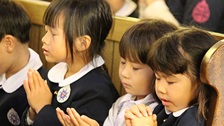
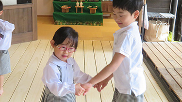

神様の愛に守られて
優しくてつよい「愛する心」を育みます

キリスト教保育
十分に自分が愛される愛情豊かな幼児期の経験は、人を信頼しひとへの愛情を育てていく土台となっていきます。この大切な時期を神様と共に過ごし、一人ひとりの個性を大切にする保育のもとに、ありのままの自分が受け止められる経験を通して、「自分を大切にし、人を愛することのできる子ども」に成長していきます。

お祈り
園舎に併設して礼拝堂があり、クリスマス礼拝や収穫感謝礼拝等の行事や普段の生活の中でも祈りを捧げています。目に見えない神さまの存在を心に感じ、生かされている命に感謝し、世界の人や困っている人たちにも心を向けてお祈りをしています。

ペア活動
一年間決まった異年齢の友達とペアになり、お世話をしたり、一緒に遊ぶペア活動を行っています。自分が小さい時に大きいお兄さんお姉さんから優しくしてもらった嬉しい思い出が、成長した際に「今度は自分たちが優しくできる!!」という成長の喜びとなって、生き生きとしたかかわりが生まれます。